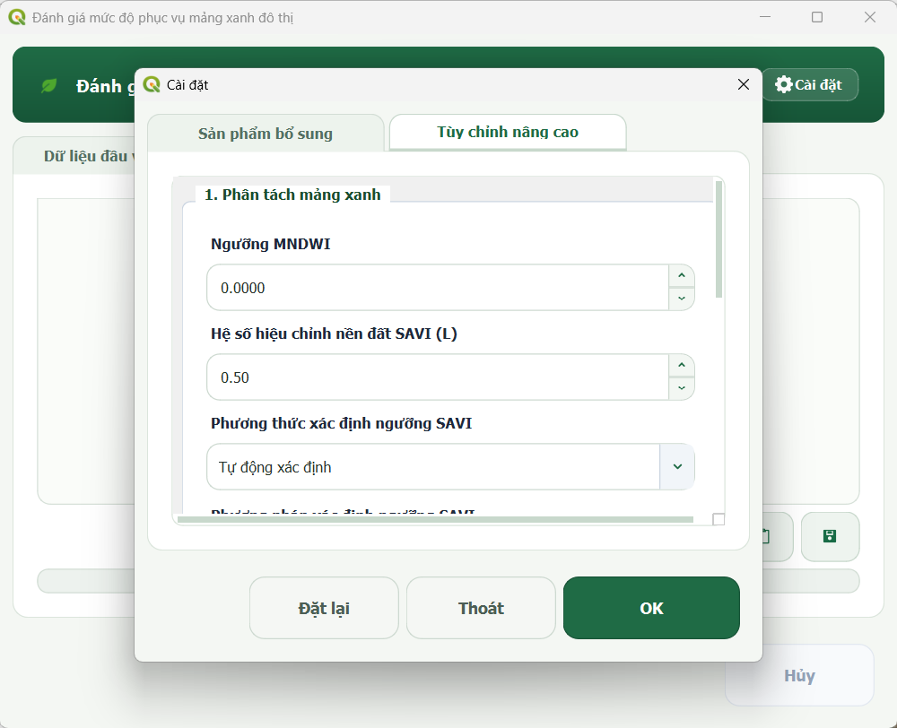

Cài đặt tham số
Trang này hướng dẫn chi tiết ý nghĩa, vai trò và cách thiết lập các tham số trong cửa sổ Cài đặt của Plugin Green Space Evaluator.

1. Tổng quan các nhóm tham số
Các tham số trong Plugin được chia thành bốn nhóm theo vai trò trong quy trình xử lý, gồm: (1) chỉ số phổ, (2) trích xuất mảng xanh, (3) vùng phục vụ và (4) thuật toán. Trong đó, người dùng thường cần quan tâm đến các tham số liên quan đến ngưỡng SAVI, bán kính phục vụ \(R_{max}\) và sức tải mục tiêu \(C_{min}\); các tham số kỹ thuật còn lại nên giữ giá trị mặc định nếu không có nhu cầu điều chỉnh.
| Nhóm | Tham số | Giá trị mặc định | Vai trò | Khuyến nghị |
|---|---|---|---|---|
| Chỉ số phổ | Ngưỡng MNDWI | 0,0 |
Phân tách pixel mặt nước khỏi đất liền | Giữ mặc định 0,0 cho ảnh Sentinel-2 L2A |
| Chỉ số phổ | Hệ số \(L\) (SAVI) | 0,5 |
Hiệu chỉnh ảnh hưởng tán xạ nền đất | Giữ mặc định 0,5 - giá trị thường được sử dụng cho SAVI trong một số điều kiện |
| Trích xuất mảng xanh | Ngưỡng SAVI | -999 |
Phân tách thảm thực vật mảng xanh trên đất liền | Giữ -999 để Plugin tự động xác định từ mẫu công viên |
| Trích xuất mảng xanh | Phương pháp thống kê SAVI | P10 |
Thuật toán trích xuất ngưỡng từ mẫu công viên | Dùng P10 làm cấu hình cơ sở; có thể đổi theo đặc thù thực vật |
| Trích xuất mảng xanh | Bách phân vị tùy chỉnh \(P\) | 10% |
Giá trị bách phân vị khi chọn phương pháp tùy chỉnh | Chỉ kích hoạt khi chọn Custom Percentile |
| Trích xuất mảng xanh | Diện tích lọc mảng xanh tối thiểu | 5000 m² |
Lọc bỏ các cụm cây xanh nhỏ lẻ ngoài công viên | Chỉ nên điều chỉnh khi cần thay đổi quy mô tối thiểu của các mảng xanh độc lập ngoài công viên theo mục tiêu nghiên cứu |
| Vùng phục vụ | Bán kính phục vụ tối đa (\(R_{max}\)) | 300 m |
Giới hạn cận trên của miền tìm kiếm bán kính | Điều chỉnh theo bán kính phục vụ mục tiêu cần đánh giá |
| Vùng phục vụ | Sức tải mục tiêu (\(C_{min}\)) | 6 m²/người |
Tiêu chuẩn diện tích mảng xanh tối thiểu trên một người | Điều chỉnh theo tiêu chuẩn quy chuẩn hoặc mục tiêu nghiên cứu |
| Thuật toán | Sai số hội tụ (Tolerance) | 10 m |
Điều kiện dừng của thuật toán tìm kiếm nhị phân | Giữ 10 m (tương đương kích thước 1 ô pixel 10m) |
2. Tham số ngưỡng SAVI
2.1. Chế độ xác định ngưỡng (-999)
- Chế độ tự động (
SAVI_THRESHOLD = -999): Giá trị mặc định-999đóng vai trò là một cờ hiệu kỹ thuật (sentinel value). Khi nhận giá trị này, Plugin tự động trích xuất các ô pixel SAVI trên đất liền nằm bên trong các polygon công viên mẫu (VEG_VECTOR) và áp dụng phương pháp thống kê để xác định ngưỡng phân tách thực vật khách quan. - Chế độ thủ công (
SAVI_THRESHOLD > -999): Người dùng có thể nhập trực tiếp một giá trị số thực cố định (ví dụ0,20hoặc0,25) để áp dụng làm ngưỡng cứng cho toàn bộ khu vực nghiên cứu mà không phụ thuộc vào lớp công viên mẫu.
2.2. Các phương pháp thống kê mẫu công viên hỗ trợ
Khi chạy ở chế độ tự động, Plugin hỗ trợ 6 phương pháp tính ngưỡng từ mẫu công viên:
- Bách phân vị P10 (
Percentile 10) (Mặc định thử nghiệm): P10 là ngưỡng bách phân vị thứ 10 của phân bố SAVI trong tập mẫu công viên, được sử dụng làm cấu hình cơ sở trong nghiên cứu. Ngưỡng thấp có xu hướng giữ lại nhiều tín hiệu thực vật hơn nhưng có thể làm tăng phân loại dư. - Mean - 1.0 * Std: Ngưỡng bằng giá trị trung bình trừ 1 lần độ lệch chuẩn (\(\mu - 1{,}0\sigma\)).
- Mean - 0.5 * Std: Ngưỡng bằng giá trị trung bình trừ 0,5 lần độ lệch chuẩn (\(\mu - 0{,}5\sigma\)).
- Median (Trung vị): Lấy giá trị trung vị P50 của phân bố SAVI.
- Mean (Trung bình): Lấy giá trị trung bình cộng \(\mu\) của phân bố SAVI.
- Custom Percentile (Bách phân vị tùy chỉnh): Cho phép người dùng nhập trực tiếp một bách phân vị \(P\) bất kỳ từ
0%đến100%.
Định hướng lựa chọn ngưỡng SAVI
Ngưỡng SAVI thấp hơn thường giữ lại nhiều tín hiệu thực vật hơn nhưng có thể làm tăng phân loại dư (nhầm lẫn với đất có cỏ thưa hoặc bóng râm); ngưỡng cao hơn giúp thảm thực vật bóc tách tinh khiết hơn nhưng có thể làm giảm diện tích mảng xanh được giữ lại.
3. Tham số vùng phục vụ
Vùng phục vụ được mô hình hóa dựa trên mối quan hệ giữa diện tích mảng xanh và dân số nằm trong phạm vi khoảng cách Euclid.
3.1. Ý nghĩa của Rmax và Cmin
- \(R_{max}\) (Bán kính phục vụ tối đa): Đóng vai trò là cận trên của miền tìm kiếm \([0, R_{max}]\) trong thuật toán tìm kiếm nhị phân (mặc định
300 m). Khoảng cách này được mô hình hóa theo khoảng cách hình học Euclid, không đại diện cho cự ly đi bộ thực tế theo mạng lưới giao thông. - \(C_{min}\) (Sức tải mảng xanh mục tiêu): Ngưỡng sức tải tối thiểu cần đạt (mặc định
6 m²/người).
3.2. Công thức tính sức tải và xác định bán kính R*
Tại mỗi khoảng cách bán kính \(R\), hàm sức tải \(C(R)\) được tính bằng:
Trong đó:
- \(S_{UGS}\): Tổng diện tích mảng xanh phục vụ đô thị (\(\text{m}^2\)).
- \(P(R)\): Tổng dân số ước tính (WorldPop) phân bố trong không gian xây dựng (Open Buildings) nằm trong phạm vi khoảng cách Euclid \(\le R\) từ mảng xanh (người).
Bán kính \(R^*\) được định nghĩa là bán kính lớn nhất trong miền tìm kiếm cấu hình \([0, R_{max}]\) mà sức tải vẫn thỏa mãn điều kiện \(C(R^*) \ge C_{min}\).
4. Tham số kỹ thuật
- Ngưỡng phân tách nước MNDWI (
MNDWI_THRESHOLD = 0,0): Phân tách các bề mặt nước (sông, hồ, kênh rạch) có \(\text{MNDWI} > 0{,}0\). Lớp mặt nước này được dùng làm mặt nạ loại trừ trước khi tính SAVI và bóc tách thực vật. - Hệ số \(L\) của SAVI (
L_FACTOR = 0,5): Hệ số triệt tiêu tán xạ nền đất. Giá trị mặc định 0,5, được sử dụng trong nghiên cứu để hiệu chỉnh ảnh hưởng nền đất. - Diện tích mảng xanh lọc nhiễu tối thiểu (
MIN_GREEN_AREA = 5000 m²): Ngưỡng áp dụng cho bộ lọcgdal.SieveFilterđối với các mảng xanh ngoài công viên. Các mảng xanh độc lập có quy mô \(< 5000\text{ m}^2\) (tương đương 50 pixel \(10\text{m} \times 10\text{m}\)) sẽ bị loại bỏ nhằm hạn chế nhiễu từ cây xanh vườn nhà nhỏ lẻ. Toàn bộ mảng xanh nằm trong ranh công viên luôn được bảo toàn nguyên vẹn. - Ngưỡng sai số hội tụ (
TOLERANCE = 10 m): Điều kiện dừng của vòng lặp Binary Search khi hiệu giữa hai biên tìm kiếm \((R_{max} - R_{min}) \le \text{Tolerance}\). Giá trị10 mtương đương độ phân giải không gian của 1 pixel ảnh Sentinel-2.
5. Khi nào nên thay đổi tham số?
🟢 Có thể thay đổi
- Bán kính phục vụ tối đa (\(R_{max}\)): Khi cần mở rộng hoặc thu hẹp miền tìm kiếm phù hợp với mục tiêu nghiên cứu.
- Sức tải mục tiêu (\(C_{min}\)): Khi áp dụng theo các tiêu chuẩn quy hoạch địa phương hoặc chỉ tiêu mảng xanh cụ thể của từng đô thị.
- Diện tích lọc mảng xanh tối thiểu: Khi cần điều chỉnh quy mô tối thiểu của mảng xanh công cộng ngoài công viên phù hợp với hiện trạng khu vực.
🟡 Nên cân nhắc
- Phương pháp thống kê SAVI / Ngưỡng SAVI thủ công: Khi kết quả trích xuất tự động theo
P10có dấu hiệu thừa hoặc thiếu thực vật do đặc thù mẫu công viên có nhiều mặt lát hoặc cây xanh quá rậm rạp. - Bách phân vị tùy chỉnh: Khi muốn thử nghiệm các mức ngưỡng phân tách chặt chẽ hơn (P15, P20) hoặc bao quát hơn (P5).
🔵 Nên giữ mặc định
- Ngưỡng MNDWI (
0,0): Được sử dụng làm giá trị mặc định trong cấu hình thử nghiệm của Plugin. - Hệ số \(L\) (
0,5): Giá trị mặc định được sử dụng trong cấu hình thử nghiệm của Plugin. - Ngưỡng sai số hội tụ (
10 m): Đồng bộ với độ phân giải lưới 10m của quy trình xử lý.
6. Lưu ý khi thay đổi tham số
Sự lan truyền của tham số trong quy trình xử lý chuỗi
Các tham số trong Plugin có mối liên hệ mật thiết qua chuỗi xử lý gồm 5 module:
- Thay đổi ngưỡng MNDWI hoặc SAVI sẽ thay đổi diện tích mảng xanh \(S_{UGS}\).
- Diện tích \(S_{UGS}\) thay đổi sẽ làm thay đổi giá trị sức tải \(C(R)\) và có thể ảnh hưởng đến bán kính phục vụ \(R^*\), tùy thuộc vào điều kiện sức tải và miền tìm kiếm.
- Bán kính \(R^*\) thay đổi sẽ làm thay đổi toàn bộ kết quả phân loại không gian xây dựng và các chỉ tiêu thống kê dân số thiếu xanh theo phường/xã.
Do đó, khi thay đổi bất kỳ tham số nào, người dùng nên kiểm tra kỹ các sản phẩm trung gian (raster mảng xanh, biểu đồ histogram) trước khi sử dụng kết quả thống kê cuối cùng.